Récompenses reçues par Interactive Brokers
N° 1 - Meilleur courtier en ligne, six ans d'affilée selon Barron's - 2023
Prix BrokerChooser 2024 - Meilleur courtier en ligne : Lire l'intégralité de l'article
 |
Meilleur courtier en ligne – 2024 Meilleur courtier en actions – 2024 Meilleur courtier pour le Day Trading - 2024 Meilleur courtier pour investissement - 2024 Meilleur courtier pour le trading sur marge N° 1 Meilleur courtier en ligne à Singapour : En savoir plus N° 1 Meilleur courtier en ligne en Allemagne : En savoir plus N° 1 Meilleur courtier en ligne & Meilleure plateforme de trading au Royaume-Uni : En savoir plus N° 1 Meilleur courtier en ligne au Canada : En savoir plus N° 1 Meilleur courtier en ligne en Australie : En savoir plus N° 1 Meilleur courtier en ligne en Inde : En savoir plus N° 1 Meilleur courtier en Investissement ESG - En savoir plus |
Analyse courtier en ligne StockBrokers.com 2024 : Lire l'intégralité de l'article
 |
N° 1 pour Trading d'obligations N° 1 pour Day Trading N° 1 pour Investissement ESG N° 1 pour Actions fractionnées N° 1 pour Trading international N° 1 pour Options d'investissement N° 1 pour Appli de trading mobile N° 1 pour Exécution d'ordre N° 1 pour Plateforme et outils N° 1 pour Technologie des plateformes N° 1 pour Trading professionnel N° 1 pour Investissement sentiment de marché Meilleur dans la catégorie : Débutants Meilleur dans la catégorie : Commissions et frais Meilleur dans la catégorie : Éducation Meilleur dans la catégorie : Trading de contrats à terme Meilleur dans la catégorie : Investisseurs à valeur nette élevée Meilleur dans la catégorie : Comptes IRA Meilleur dans la catégorie : Trading d'options Meilleur dans la catégorie : Recherche Meilleur dans la catégorie : Toutes catégories |
Analyse courtier en ligne ForexBrokers.com 2024 : Lire l'intégralité de l'article
| 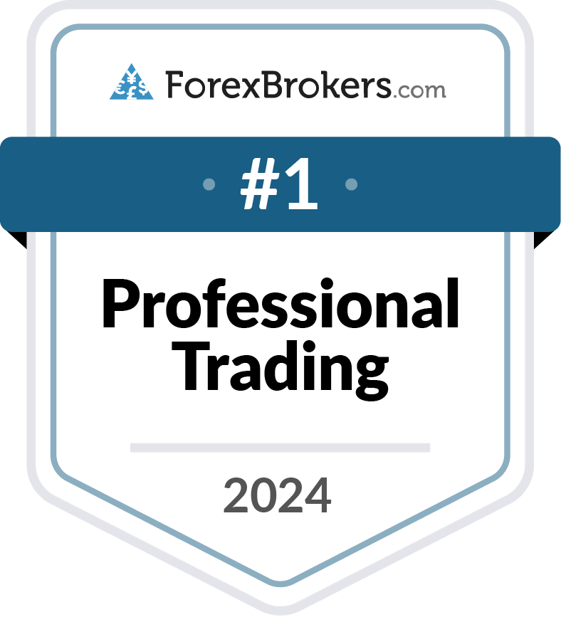 | 5 étoiles sur 5 Toutes catégories N° 1 pour Trading professionnel N° 1 pour Offre ESG N° 1 pour Clients institutionnels N° 1 pour Offre d'investissements N° 1 pour Technologie des plateformes Meilleur dans la catégorie : Toutes catégories Meilleur dans la catégorie : Trading algo Meilleur dans la catégorie : Commissions et frais Meilleur dans la catégorie : Trading de crypto Meilleur dans la catégorie : Éducation Meilleur dans la catégorie : Appli de trading mobile Meilleur dans la catégorie : Plateformes et outils Meilleur dans la catégorie : Indice de confiance Meilleur dans la catégorie : Recherche |
Analyse courtier en ligne Nerdwallet 2024 : Lire l'intégralité de l'article
 |
Meilleur courtier en ligne pour les traders expérimentés |
2024 The Ascent - Avis A Motley Fool Service : Lire l'intégralité de l'article
| 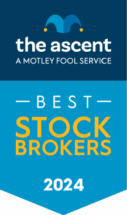 | Meilleur courtier en actions pour le trading international |
Meilleur courtier en ligne de 2023 selon Matt Miller, Barron's, 9 juin 2023 : Lire l'intégralité de l'article
 |
N° 1 Meilleur courtier en ligne - 5 étoiles sur 5 |
Prix BrokerChooser 2023 - Meilleur courtier en ligne : Lire l'intégralité de l'article
 |
Meilleur courtier en ligne – 2023 Meilleur courtier pour le Day Trading - 2023 Meilleur courtier en actions – 2023 Meilleur courtier pour investissement - 2023 N° 1 Meilleur courtier en ligne à Singapour : En savoir plus N° 1 Meilleur courtier en ligne & Meilleure plateforme de trading au Royaume-Uni : En savoir plus N° 1 Meilleur courtier en ligne en Inde l: En savoir plus N° 1 Meilleur courtier en Investissement ESG - En savoir plus |
Analyse courtier en ligne StockBrokers.com 2023 : Lire l'intégralité de l'article
| 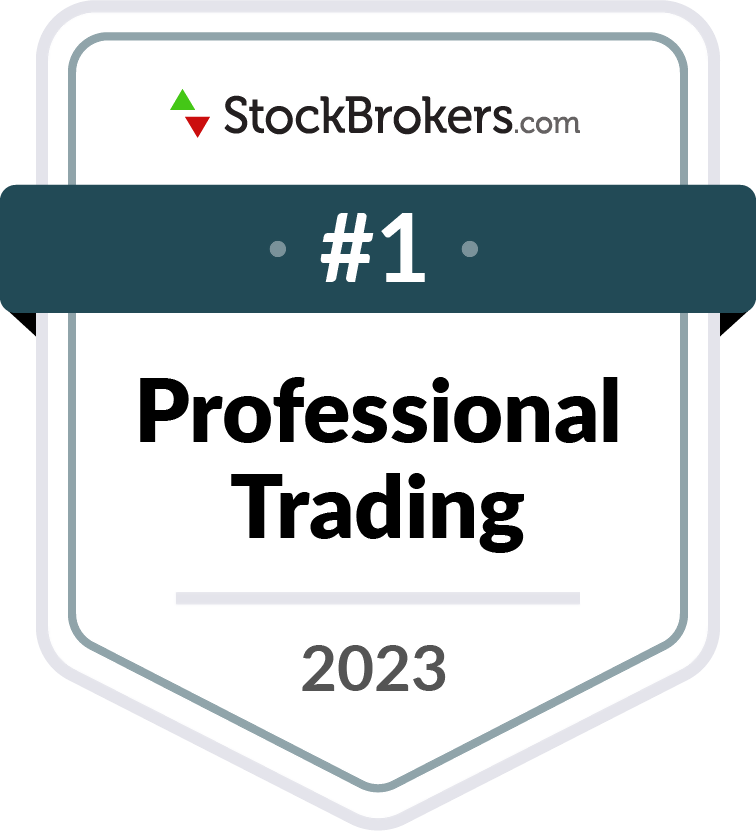 |
N° 1 pour Trading professionnel N° 1 pour Trading actif N° 1 pour Trading de contrats à terme N° 1 pour Trading international N° 1 pour Options d'investissement N° 1 pour Technologie des plateformes N° 1 pour Investissement sentiment de marché N° 1 pour Investissement ESG Meilleur dans la catégorie : Trading d'options 5 étoiles sur 5 - Appli mobile de trading 5 étoiles sur 5 - Options d'investissement 5 étoiles sur 5 - Plateformes et outils 5 étoiles sur 5 pour Recherche |
2023 Investopedia : Lire l'intégralité de l'article
| 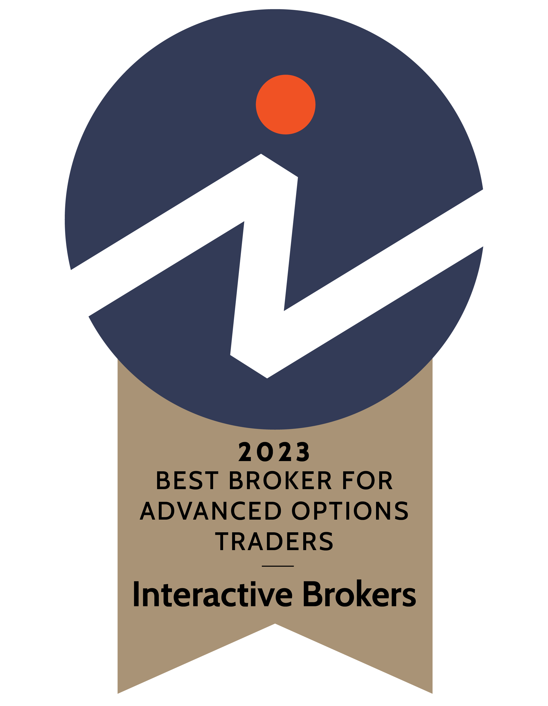 | Meilleur courtier poue les traders d'options expérimentés |
Analyse courtier en ligne ForexBrokers.com 2023 : Lire l'intégralité de l'article
| 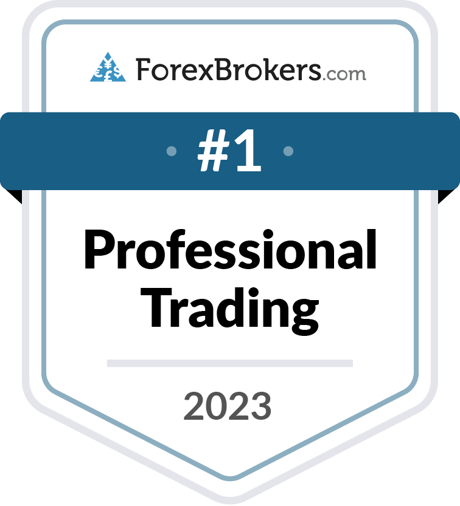 | 4,6 étoiles sur 5 Toutes catégories Meilleur courtier pour le trading international Meilleur courtier en ligne pour les traders expérimentés |
Prix Benzinga 2023
|
Meilleur courtier en ligne pour les obligations - Lire l'intégralité de l'article Meilleur courtier en ligne pour les fonds communs de placement - Lire l'intégralité de l'article Meilleur courtier pour les traders d'options internationaux - Lire l'intégralité de l'article |
Prix Preqin 2023 :
| 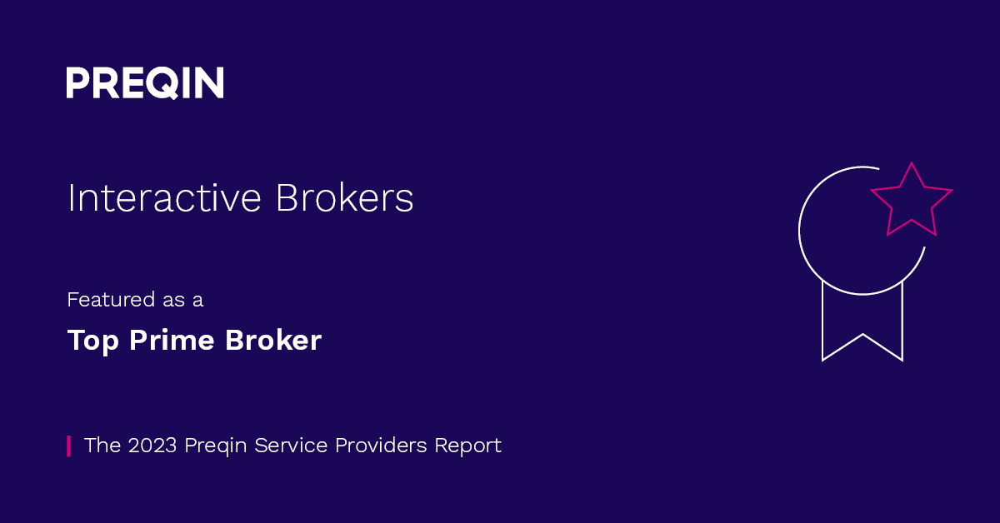 | Meilleur Prime Broker |
| 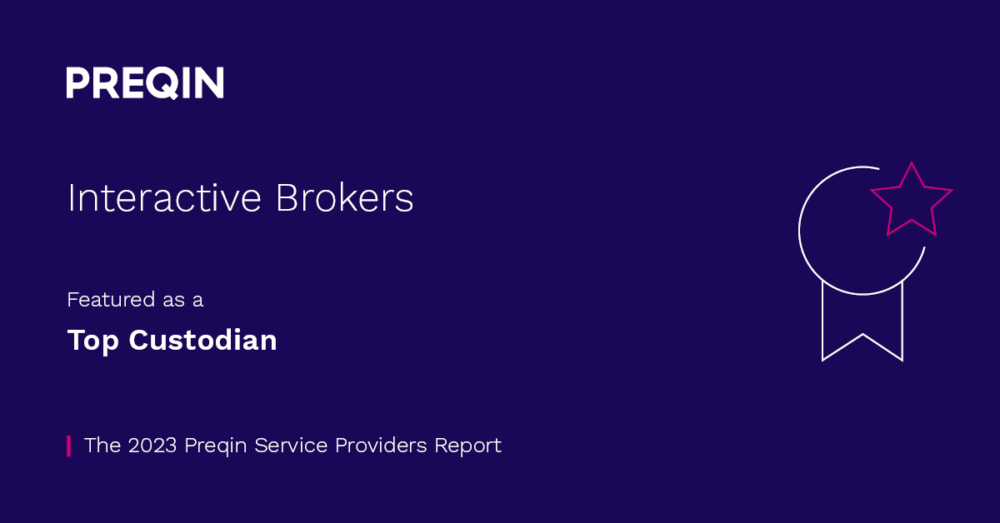 | Meilleur dépositaire de Hedge fund |
Analyse courtier en ligne TradingView 2023 : Lire l'intégralité de l'article
| 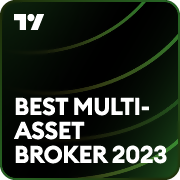 | Meilleur courtier multi-actifs |
Prix 2023 Investing in the Web Global Broker : Lire l'intégralité de l'article
| 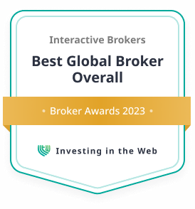 | Meilleur courtier toutes catégories Courtier ayant les frais FX les plus bas : En savoir plus Meilleur courtier pour les obligations : En savoir plus Meilleur courtier pour les comptes Société : En savoir plus Meilleure appli d'investissement ESG et Impact (pour Impact, par Interactive Brokers) : En savoir plus Meilleur courtier pour les LLC : En savoir plus Meilleure plateforme de trading européenne : En savoir plus Meilleure plateforme de Émirats arabes unis : En savoir plus Meilleure plateforme d'investissement au Royaume-Uni : En savoir plus |
Prix 2023 Australian Finder : Lire l'intégralité de l'article.
| 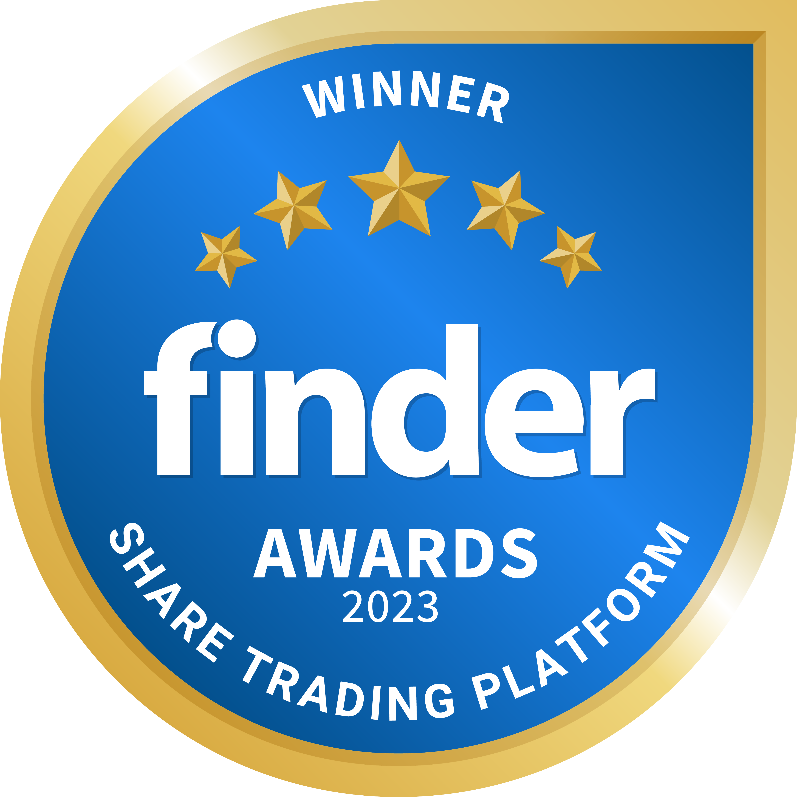 | Lauréat - Satisfaction client pour trading d'actions - En savoir plus |
Meilleur courtier pour les actions mondiales |
|
| 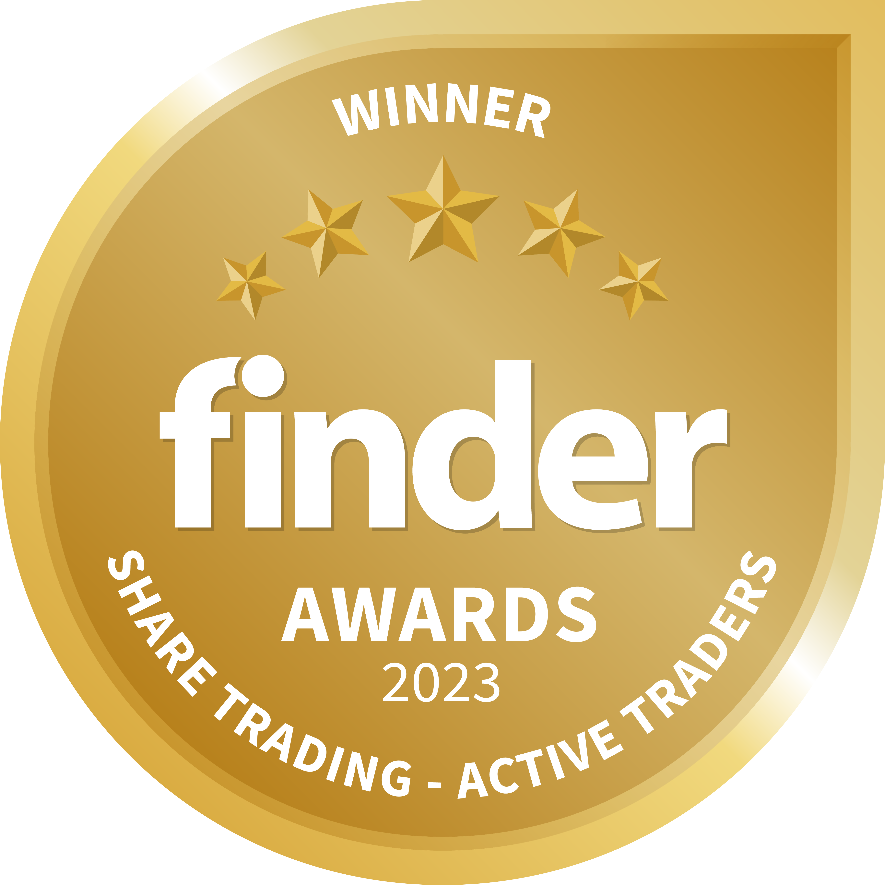 | Meilleur courtier pour les traders actifs |
Prix 2023 Good Money Guide Lire l'intégralité de l'article
| 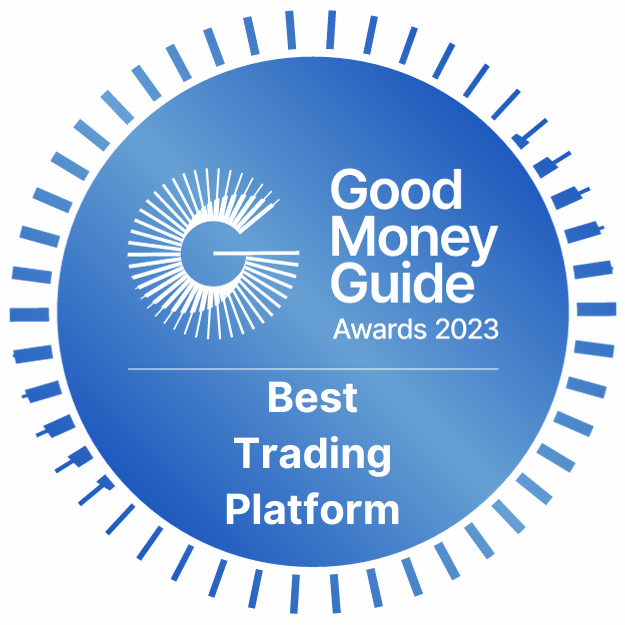 |
Meilleur courtier pour les obligations Meilleur courtier pour les contrats à terme Meilleure plateforme de trading pour les options |
Ganadores de los Premios Rankia 2023 para Mejores Brokers Lire l'intégralité de l'article
| 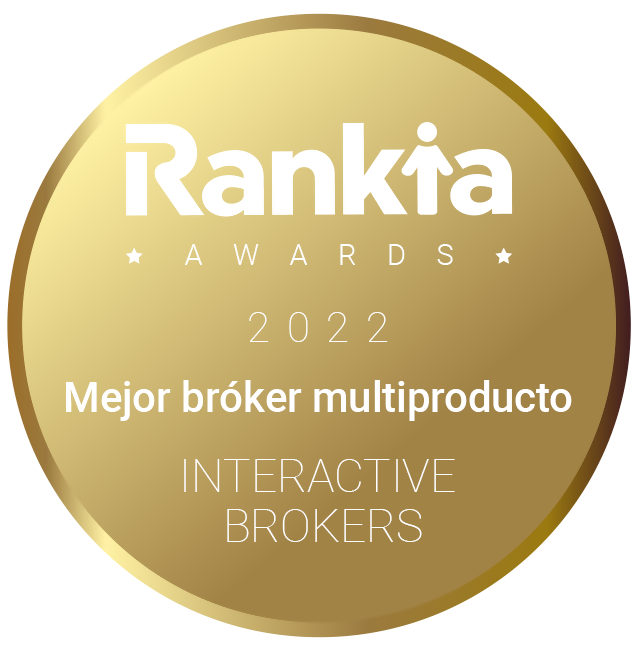 | Meilleur courtier multi-produit |
Meilleur courtier en ligne de 2022, par Matt Miller, Barron's, 25 mars 2022 : Lire l'intégralité de l'article
N° 1 Meilleur courtier en ligne - 5 étoiles sur 5 N° 1 pour les traders actifs N° 1 pour l'information |
2022 Investopedia : Lire l'article complet.
 |
4,6 étoiles sur 5 Toutes catégories |
Meilleur courtier pour le trading international |
|
Meilleur courtier en ligne pour les traders expérimentés |
Analyse StockBrokers.com 2022 : Lire l'article complet
N° 1 pour Outils professionnels #1 pour Trading de contrats à terme N° 1 pour Offre d'investissement N° 1 pour Trading international 5 étoiles sur 5 pour Offre d'investissements 5 étoiles sur 5 pour Recherche |
Analyse courtier en ligne ForexBrokers.com 2022 : Lire l'intégralité de l'article
| 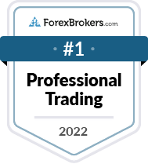 | N° 1 pour Offre d'investissements N° 1 pour Innovation N° 1 pour Clients institutionnels 5 étoiles sur 5 Toutes catégories 5 étoiles sur 5 pour Commissions & Frais 5 étoiles sur 5 pour Offre d'investissements |
Prix BrokerChooser 2022 - Meilleur courtier en ligne : Lire l'intégralité de l'article
 |
Meilleur courtier en ligne – 2022 Meilleur courtier pour le Day Trading - 2022 Meilleur courtier pour investissement - 2022 |
Prix Preqin 2022 :
Meilleur Prime Broker |
|
| 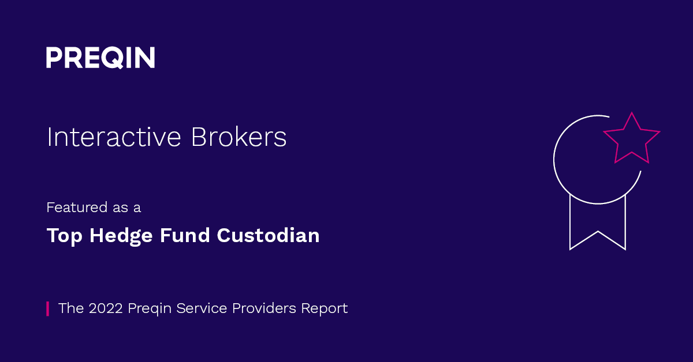 | Meilleur dépositaire de Hedge fund |
Meilleur courtier en ligne de 2021, par Matt Miller, Barron's, 26 février 2021
 |
N° 1 Meilleur courtier en ligne - 5 étoiles sur 5 N° 1 pour les traders actifs N° 1 pour l'information N° 1 pour l'international N° 1 pour le trading Reproduit avec la permission de Barron's |
Analyse StockBrokers.com 2021 : Lire l'article complet
| 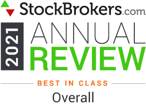 | 5 étoiles sur 5 Toutes catégories N° 1 pour Professionnels N° 1 pour Nouveaux outils N° 1 pour Offre d'investissement N° 1 pour Trading international N° 1 pour Trading de contrats à terme |
Analyse de courtage Bankrate Brokerage 2021 : Lire l'intégralité de l'article
4,5 étoiles sur 5 Toutes catégories Meilleur courtier pour le trading actif Meilleur courtier pour le trading sur marge Meilleur courtier pour les remises sur le volume |
Prix Benzinga 2021
Meilleur courtier en ligne pour les obligations - Lire l'intégralité de l'article Meilleur courtier en ligne pour les fonds communs de placement - Lire l'intégralité de l'article |
|
Prix Benzinga 2021 Global Fintech - Lifetime Achievement Prix Benzinga 2021 Global Fintech - Meilleure plateforme de trading simulé |
Prix Preqin 2021 :
| 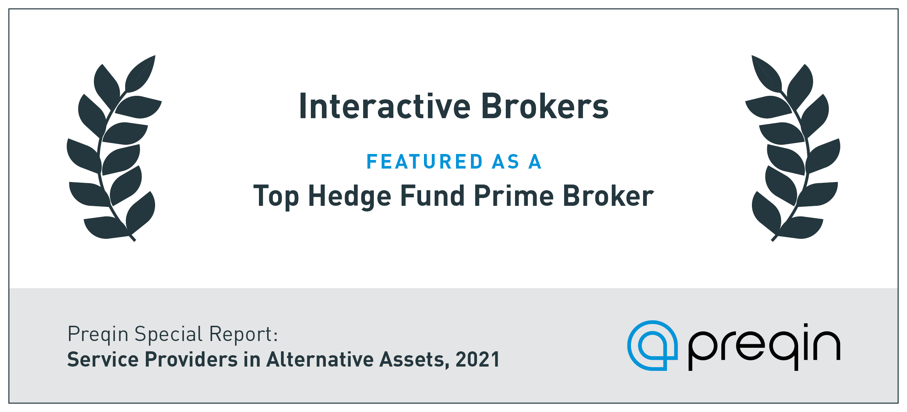 | Meilleur Prime Broker pour Hedge Fund |
 |
Meilleur dépositaire de Hedge fund |
Prix BrokerChooser 2021 - Meilleur courtier en ligne : Lire l'intégralité de l'article
 |
Meilleur courtier en ligne – 2021 Meilleur courtier pour le Day Trading - 2021 |
Prix Stocks and Commodities 2021
 |
Lauréat 2021 Courtage d'actions2 Lauréat 2021 Courtage de contrats à terme2 Lauréat 2021 Courtage Forex2 |
Analyse courtier en ligne ForexBrokers.com 2021 : Lire l'intégralité de l'article
 |
4,5 étoiles sur 5 Toutes catégories 5 étoiles - Offre d'investissement 4,5 étoiles - Commissions & Frais 4,5 étoiles - Plateformes & Outils 4,5 étoiles - Recherche |
Meilleur courtier en ligne 2020 - Barron's
| 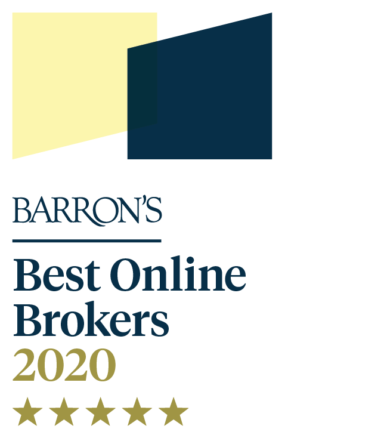 | N° 1 Meilleur courtier en ligne - 5 étoiles sur 5 N° 1 pour les traders actifs N° 1 pour les traders internationaux N° 1 pour les fonds de pension |
Prix StockBrokers.com 2020 : Lire l'article complet
| 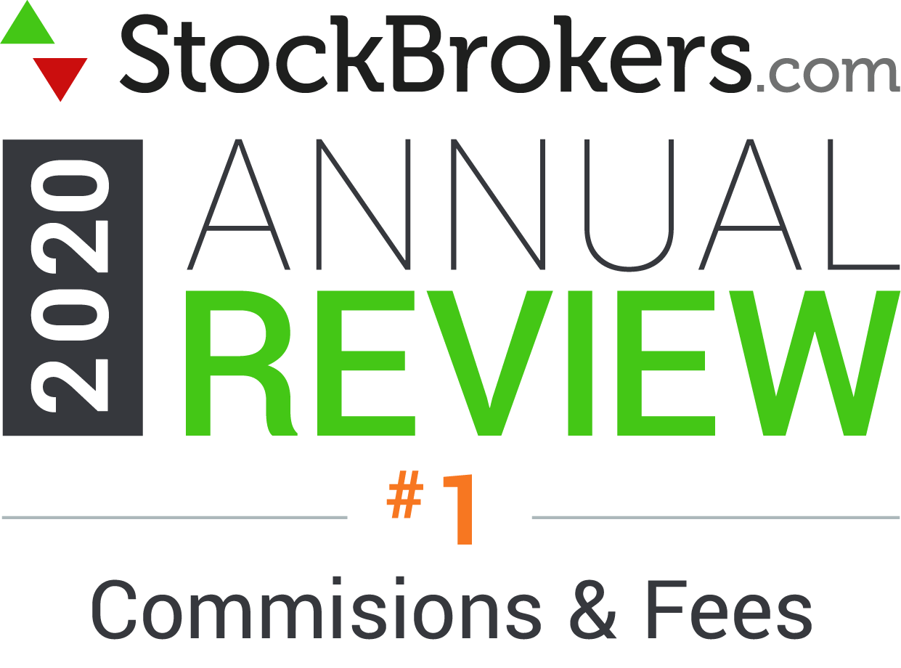 | N° 1 pour Commissions et frais |
| 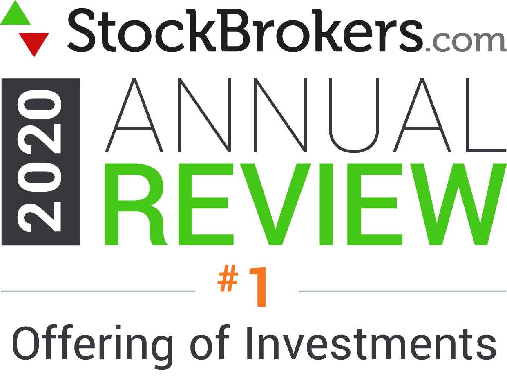 | N° 1 pour Offre d'investissement |
| 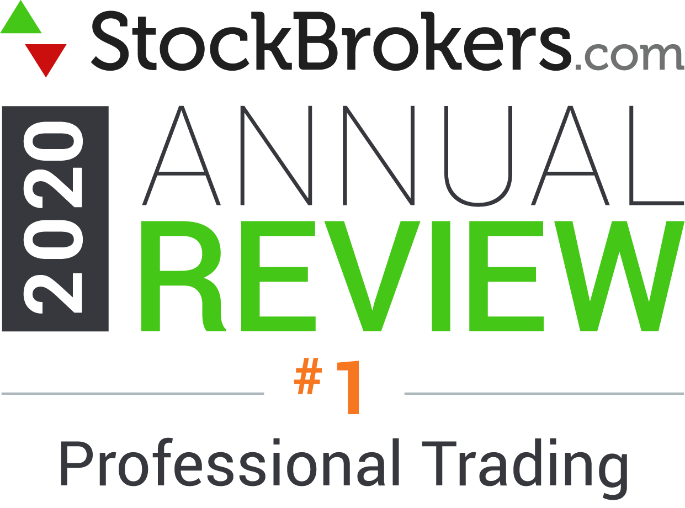 | N° 1 pour Professionnels |
| 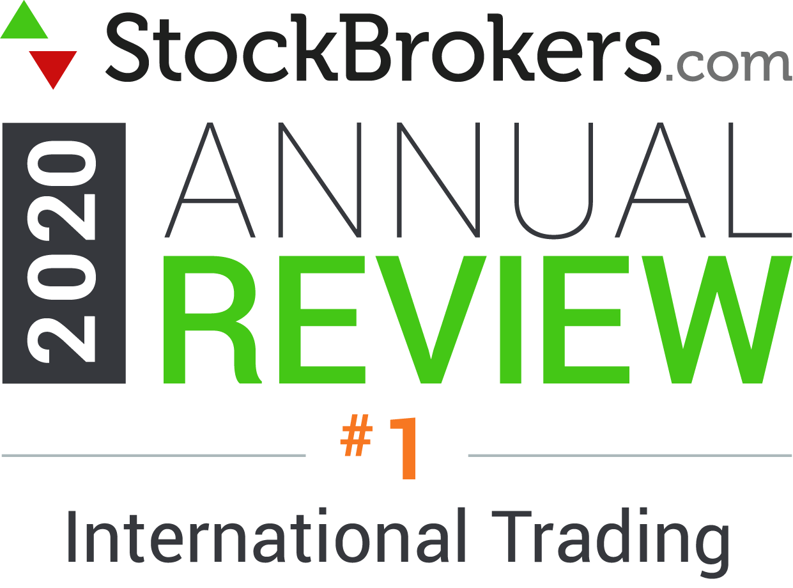 | N° 1 pour Trading international |
| 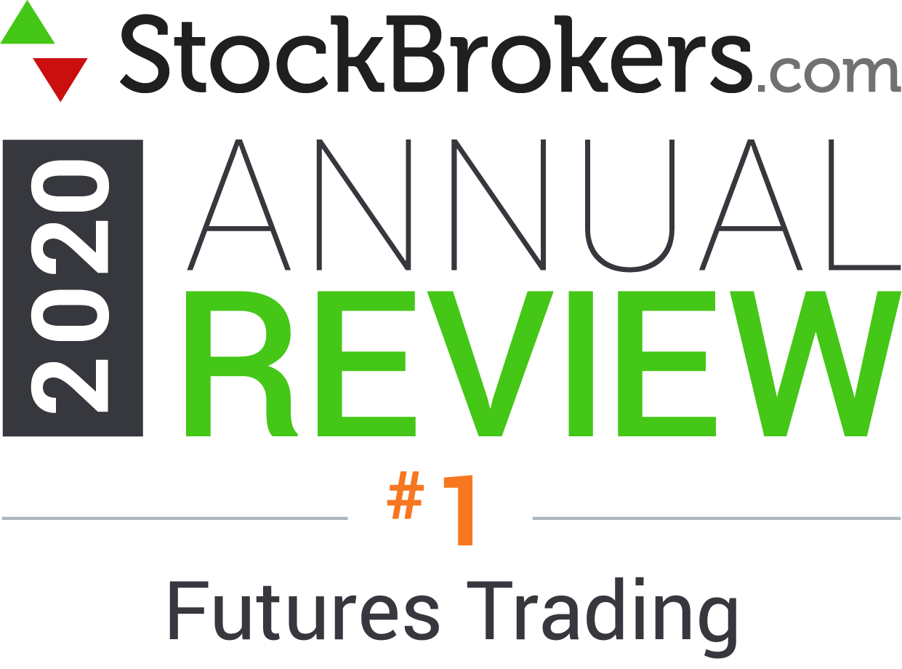 | N° 1 pour Trading de contrats à terme |
| 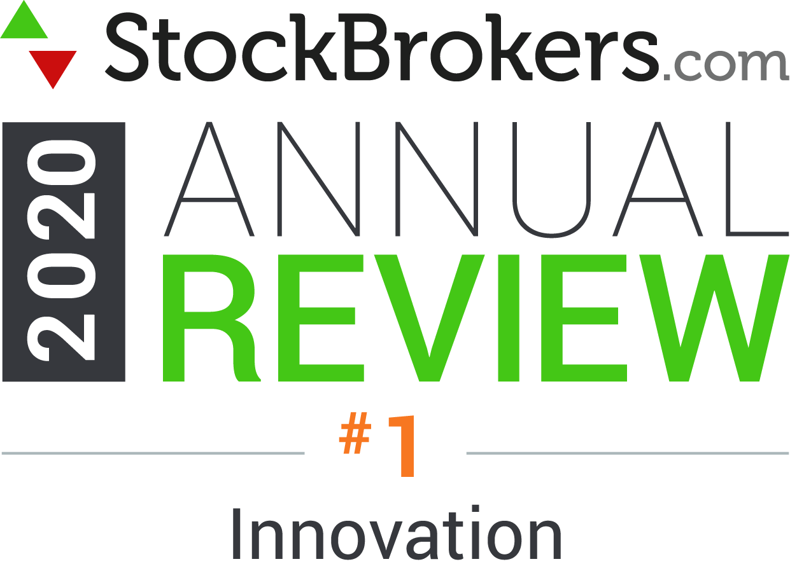 | N° 1 pour Innovation |
| 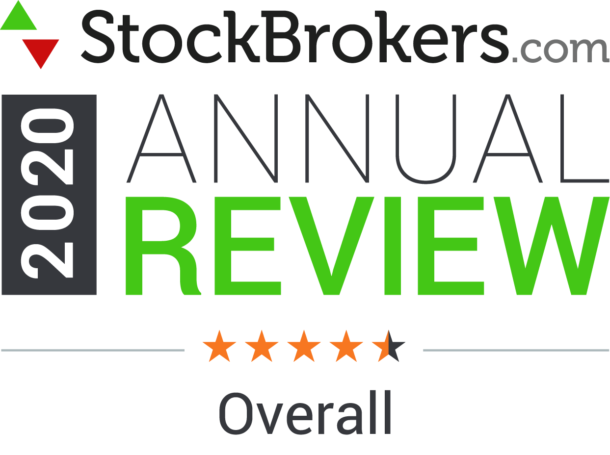 | 4,5 étoiles sur 5 Toutes catégories |
Prix NerdWallet 2020 : Lire l'article complet
 |
Classé « Meilleur courtier pour investissement à faible coût ». |
Classé « Meilleur courtier pour plateforme de trading et recherche (égalité) ». |
2020 Investopedia : Lire l'intégralité de l'article
 |
4,4 étoiles sur 5 Toutes catégories |
 |
Meilleur courtier en ligne pour le trading international |
Meilleur courtier en ligne pour les traders expérimentés |
Prix Benzinga 2020 :
 |
Meilleure technologie de trading - Benzinga 2020 |
Prix Preqin 2020 :
| 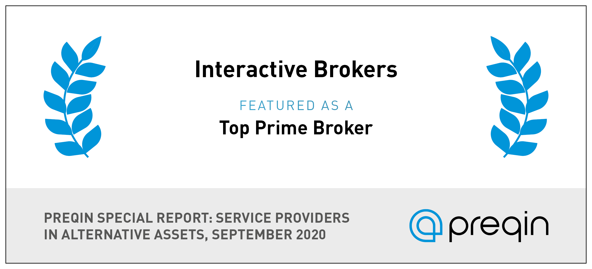 | Meilleur Prime Broker |
| 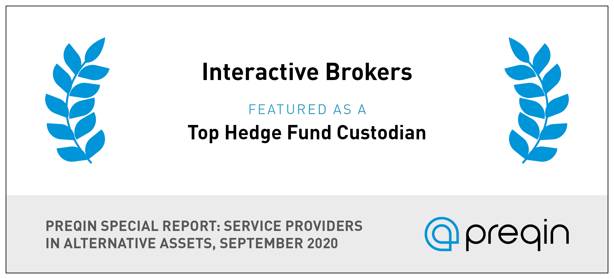 | Meilleur dépositaire de Hedge fund |
Prix Preqin 2020 :
Meilleur Prime Broker |
|
Meilleur dépositaire de Hedge fund |
Prix 2020 Good Money Guide : Lire l'article complet
| 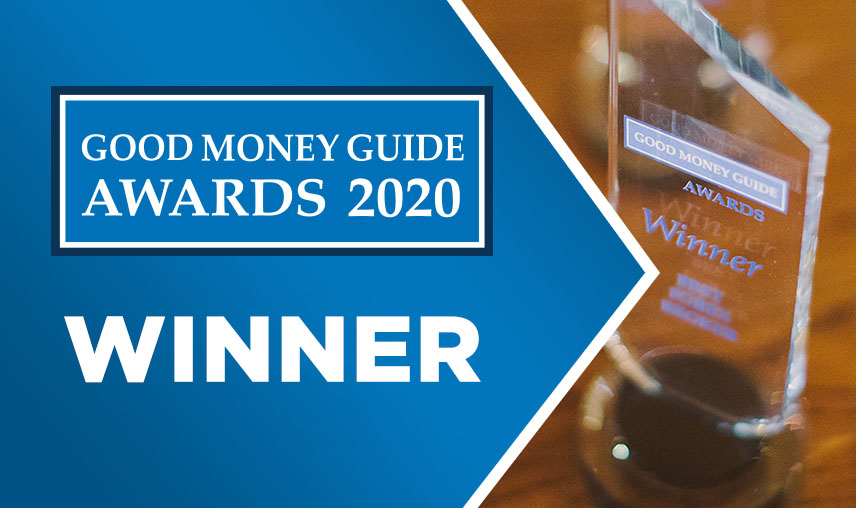 | 5 étoiles sur 5 |
Prix Canstar 2020 : Lire l'article complet.
5 étoiles pour Rentabilité exceptionnelle, trading d'actions en ligne - Trader |
|
| 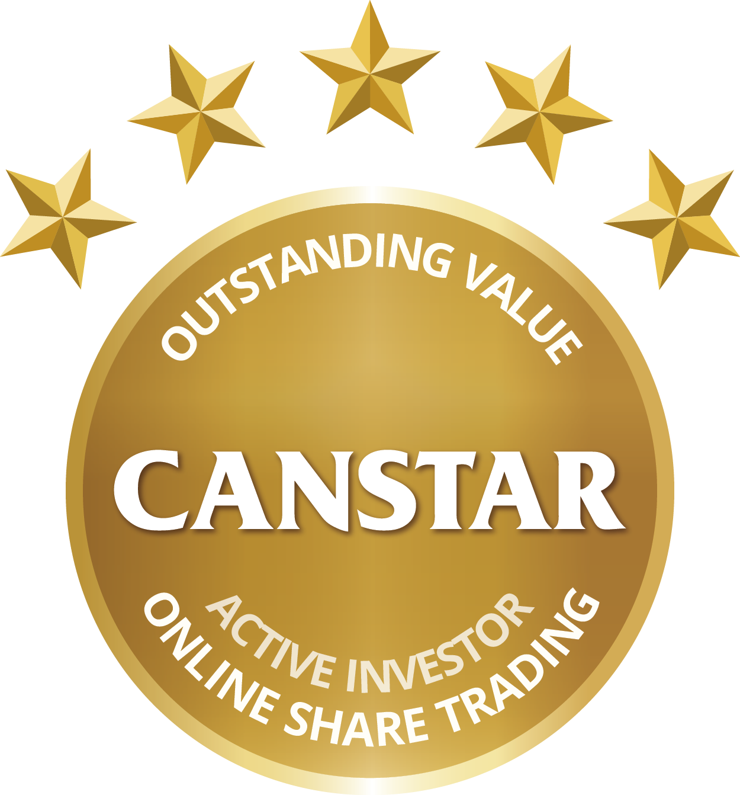 | 5 étoiles pour Rentabilité exceptionnelle, trading d'actions en ligne - Investisseur actif |
5 étoiles pour Rentabilité exceptionnelle, trading d'actions en ligne - Investisseur occasionnel |
Prix Australian Finder 2020 : Lire l'article complet.
| 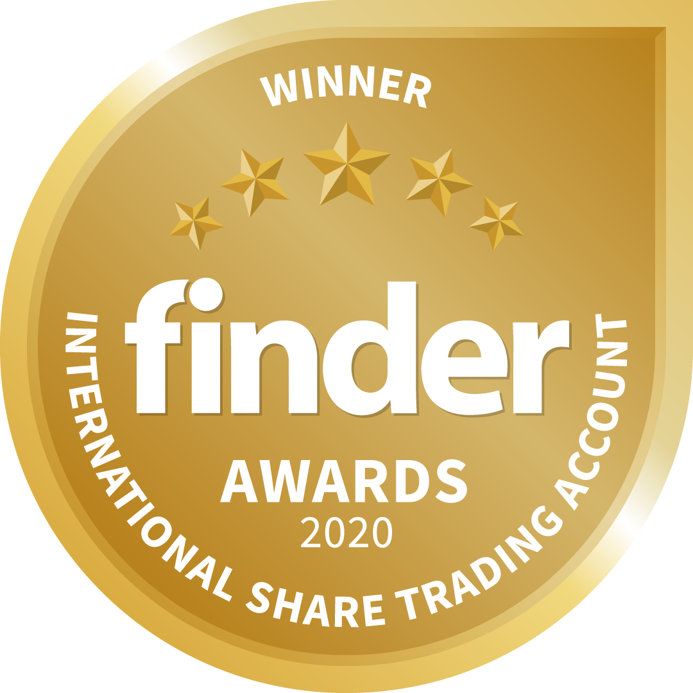 | Meilleur compte international de trading d'actions |
Meilleure plateforme de trading d'actions (Traders actifs) |
|
Meilleur courtage à moindre coût |
Prix Handelsblatt 2020 (Allemagne) :
| 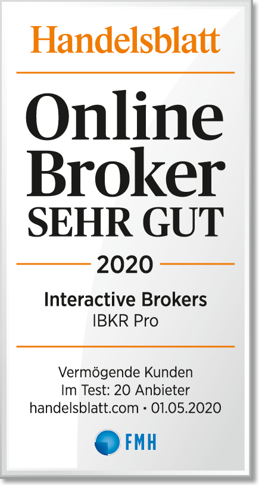 | Sehr Gut (Très bien) Top 10 – pour le service des traders actifs Top 10 – pour le service des traders prospères Top 10 – pour le service des traders occasionnels |
Prix Fund Intelligence Technology & WSL 2020 :
Meilleur Service clientèle d'un courtier-négociateur. |
|
Meilleur courtier pour trading de contrats à terme |
Prix CompareForexBrokers 2020 : Lire l'article complet
Meilleur courtier de devises au comptant de Singapour pour 2020. |
|
Meilleur courtier ECN (MAS) pour 2020. |
Prix Barron's 2019 des Meilleurs courtiers en ligne : Lire l’intégralité de l'article
Interactive Brokers est numéro 1 dans la catégorie Meilleur courtier en ligne 2019 selon Barron's Interactive Brokers est numéro 1 dans la catégorie « Meilleur courtier pour le trading mobile ». Interactive Brokers est numéro 1 dans la catégorie « Meilleur courtier pour les traders internationaux ». Interactive Brokers est nommé « Meilleur courtier pour les traders réguliers » |
2019 Preqin Prestataires de services : Lire l'intégralité de l'article
| 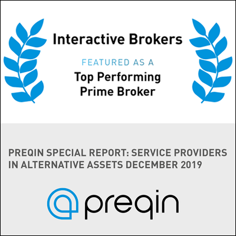 |
|
| 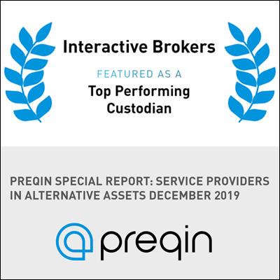 |
|
Prix CardRate.com 2019 courtiers en ligne : Lire l'intégralité de l'article
|
Stockbrokers.com 2019 : Lire l'intégralité de l'article
| 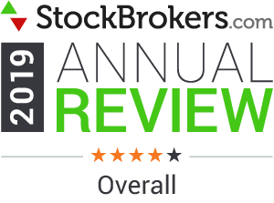 | Interactive Brokers est numéro 1 dans la catégorie « Commissions et frais ». |
| 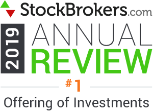 | Interactive Brokers est numéro 1 dans la catégorie « Offre d'investissement »" |
Interactive Brokers est numéro 1 dans la catégorie « Trading actif ». |
|
| 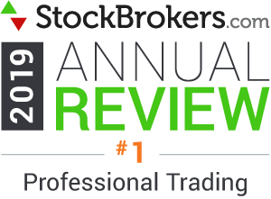 | Interactive Brokers est numéro 1 dans la catégorie « Trading professionnel ». |
Interactive Brokers est numéro 1 dans la catégorie « Trading international ». |
|
Interactive Brokers a reçu la notation de 4 étoiles sur 5, toutes catégories confondues. |
2019 Investopedia: Lire l'intégralité de l'article
Interactive Brokers figure parmi ses pairs dans la liste Investopedia, source fiable d'évaluation des courtiers en ligne.
 |
Interactive Brokers nommé parmi les meilleurs courtiers, « Toutes catégories confondues ». |
Interactive Brokers nommé « Meilleur courtier à faible coût ». |
|
Interactive Brokers nommé « Meilleur courtier pour le trading international ». |
|
Interactive Brokers nommé « Meilleur courtier pour le trading d'options ». |
|
| 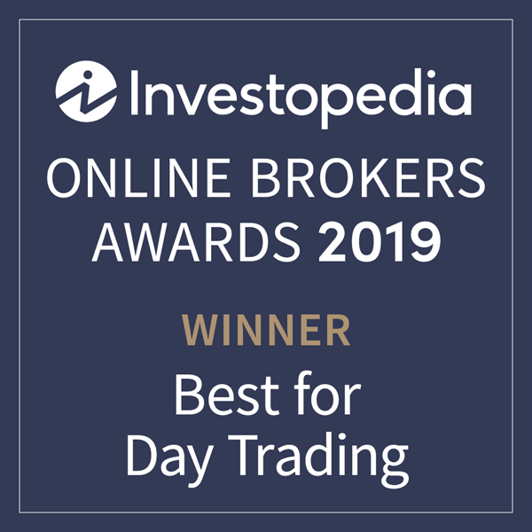 | Interactive Brokers nommé « Meilleur courtier pour le day trading ». |
Interactive Brokers nommé « Meilleur courtier pour les penny stocks ». |
Prix Benzinga 2019 des meilleurs courtiers en ligne : Lire l'intégralité de l'article
Interactive Brokers a reçu la notation de 4 étoiles sur 5.
|
Prix Benzinga 2019 des meilleurs courtiers en ligne au Canada : Lire l'integralité de l'article
Interactive Brokers a reçu la notation de 4 étoiles sur 5, toutes catégories confondues.
|
Prix Benzinga 2019 des meilleurs courtiers en ligne en Australie : Lire l'integralité de l'article
Interactive Brokers a reçu la notation de 4 étoiles sur 5, toutes catégories confondues.
|
ForexBrokers.com 2019 : Lire l'intégralité de l'article
| 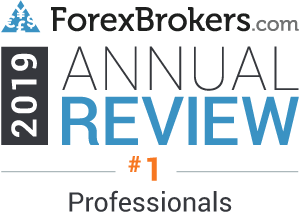 | Interactive Brokers est numéro 1 dans la catégorie « Professionnels ». |
| 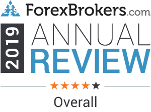 | Interactive Brokers est nommé « Meilleur de sa catégorie : Offre d'investissements ». |
Interactive Brokers a reçu la notation de 4 étoiles sur 5, toutes catégories confondues. |
Prix Fund Technology and WSL 2019
 |
Lauréat 2019 « Meilleur négociateur courtier pour les contrats à terme ». |
Prix Canstar 2019
| 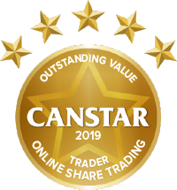 | Interactive Brokers a remporté 5 étoiles pour « Rentabilité exceptionnelle pour les traders ». |
 |
Interactive Brokers a remporté 5 étoiles pour « Rentabilité exceptionnelle pour les investisseurs actifs ». |
BrokerChooser 2019 : Lire l'intégralité de l'article
 |
Interactive Brokers est nommé en 2019 dans la catégorie « Meilleur courtier en ligne ». |
Prix NerdWallet 2019
| 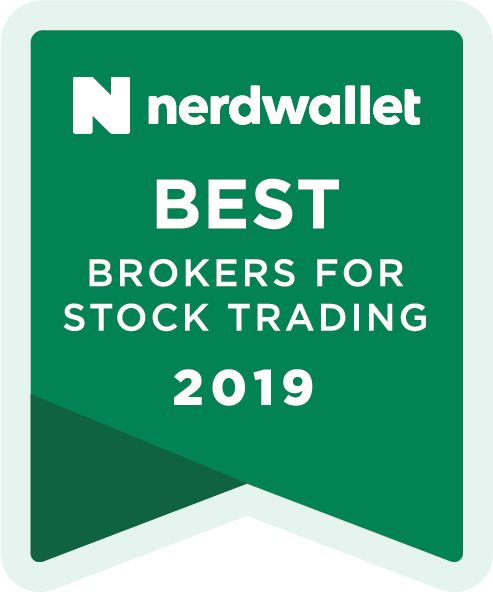 | Interactive Brokers a été nommé « Meilleur courtier pour les investisseurs actifs » dans la catégorie « Meilleurs courtiers pour le trading d'actions ». |
Prix Investors Business Daily 2019
Interactive Brokers est numéro 1 en 2019 dans la catégorie « Faibles commissions et frais ». Interactive Brokers est numéro 1 en 2019 dans la catégorie « Plateformes et applications de trading mobile ». Interactive Brokers est numéro 1 en 2019 dans la catégorie « Diversité de l'offre de produits ». Interactive Brokers est numéro 1 en 2019 dans la catégorie « Sécurité du site Internet ». |
Prix HFM Technology 2019
Interactive Brokers est numéro 1 en 2019 dans la catégorie « Meilleure application de travail mobile et à distance ». |
Prix HFM European Hedge Fund Services 2019
| 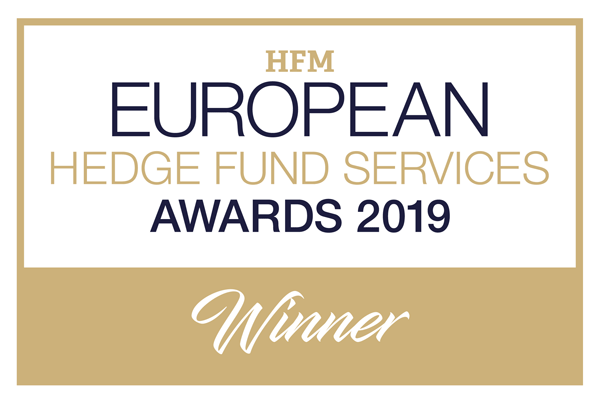 | Interactive Brokers est nommé en 2019 « Meilleur Prime Broker - Catégorie Technologie ». |
Prix CompareForexBrokers 2019
Meilleur courtier de devises au comptant de Singapour pour 2019. |
Prix Barron's 2018 : Lire l'intégralité de l'article
Interactive Brokers a reçu la note globale de 4,5 en 20181, la note la plus élevée décernée par Barron's. |
|
Interactive Brokers a reçu une notation de 4,5 en 20181 dans la catégorie « Meilleur courtier pour les traders d'options ». |
|
Interactive Brokers a reçu la notation de 4,6 étoiles en 20181 dans la catégorie « Coûts les plus bas ». |
|
Interactive Brokers a reçu la notation de 4,9 en 20181 dans la catégorie « Meilleure Analyse de portefeuille et relevés ». |
|
Interactive Brokers a reçu une notation de 4,7 en 20181 dans la catégorie « Meilleure expérience de trading et technologie ». |
|
Interactive Brokers a reçu la notation de 4,5 étoiles en 20181 dans la catégorie « Meilleur courtier pour les traders réguliers ». |
|
Interactive Brokers a reçu une notation de 4,8 en 20181 dans la catégorie « Diversité de l'offre ». |
Stockbrokers.com 2018 : Lire l'intégralité de l'article
| 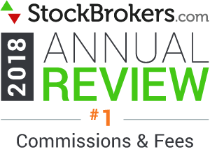 | Interactive Brokers est numéro 1 en 2018 dans la catégorie « Commissions et frais ». |
 |
Interactive Brokers est numéro 1 dans la catégorie « Offre d'investissements » |
| 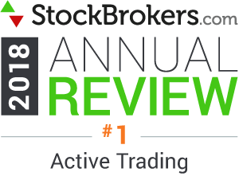 | Interactive Brokers est numéro 1 en 2018 dans la catégorie « Trading actif ». |
| 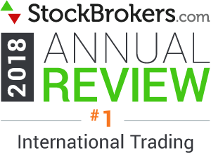 | Interactive Brokers est numéro 1 en 2018 dans la catégorie « Trading international ». |
| 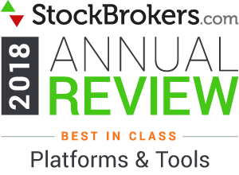 | Interactive Brokers a reçu l'évaluation « Meilleur de sa catégorie » en 2018 pour les « Plateformes et outils ». |
Interactive Brokers a reçu l'évaluation « Meilleur de sa catégorie » en 2018 pour le « Trading mobile ». |
|
| 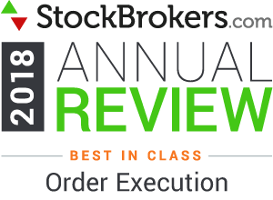 | Interactive Brokers a reçu l'évaluation « Meilleur de sa catégorie » en 2018 pour « Exécution d'ordre ». |
Interactive Brokers a reçu l'évaluation « Meilleur de sa catégorie » en 2018 pour le « Trading d'options ». |
|
| 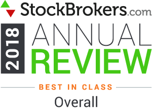 | Interactive Brokers a reçu l'évaluation « Meilleur de sa catégorie globalement » en 2018 |
2018 ForexBrokers.com : Lire l'intégralité de l'article
Interactive Brokers est numéro 1 dans la catégorie « Professionnels ». |
|
| 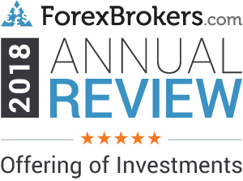 | Interactive Brokers reçoit 5 étoiles sur 5 dans la catégorie : Offre d'investissement |
Interactive Brokers est : Meilleur de sa catégorie pour le Trading mobile |
2018 Fund Technology et WSL Awards
Lauréat 2018 « Meilleure plateforme globale de trading » |
|
Lauréat 2018 « Meilleure plateforme de trading pour les options - Courtier ». |
Prix CTA Intelligence US Services 2018
Lauréat 2018 « Meilleur courtier à terme - Catégorie Technologie ». |
Prix HFM Week US Hedge Fund Services 2018
Lauréat 2018 « Meilleure application mobile ». |
|
 |
Lauréat 2018 « Meilleur Prime Broker » |
Prix Stocks and Commodities 2018
|
Lauréat 2018 pour le courtage d'actions.2 Lauréat 2018 pour le courtage de contrats à terme.2 Lauréat 2018 pour le courtage de devises au comptant.2 Lauréat 2018 Plateformes institutionnelles.2 |
Prix Canstar 2018
| 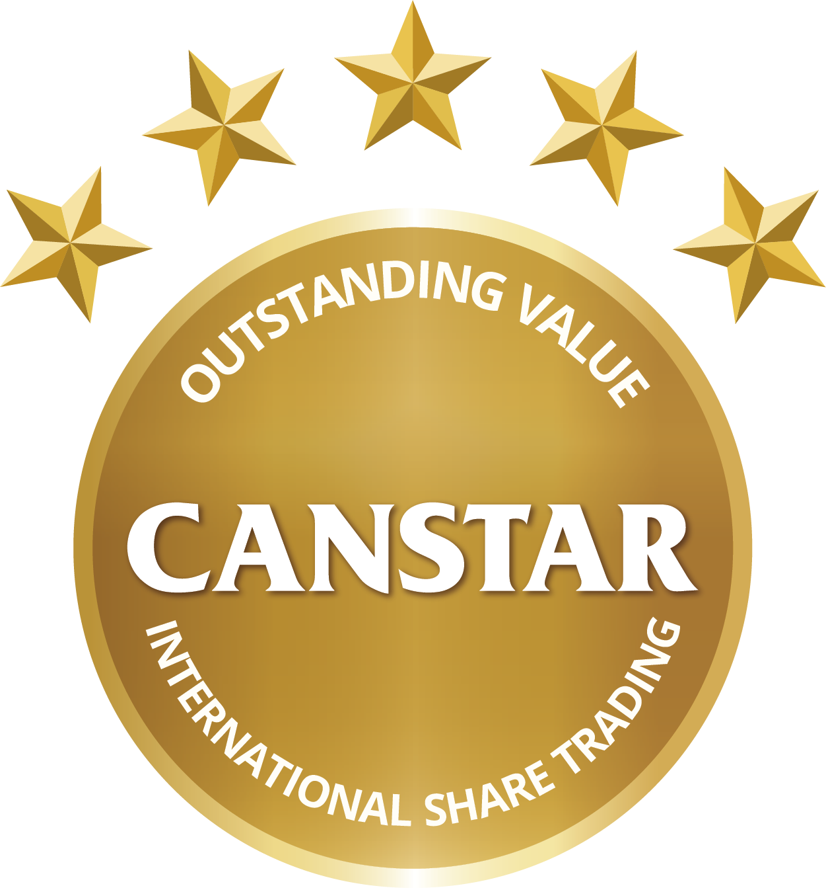 | Interactive Brokers a remporté 5 étoiles pour « Trading exceptionnel sur les actions ». |
Prix NerdWallet 2018
 |
Interactive Brokers a été nommé « Meilleur courtier pour les investisseurs actifs » dans la catégorie « Meilleurs courtiers pour le trading d'actions ». |
Prix Investors Business Daily 2018
Interactive Brokers est numéro 1 en 2018 dans la catégorie « Faibles commissions et frais ». |
19e Classement annuel des courtiers The Globe and Mail
Notation Interactive Brokers : B+ |
Prix Surviscor 2018
Interactive Brokers est numéro 1 en 2018 dans la catégorie « Meilleure expérience de courage mobile » |
Prix Barron's 2016 : Lire l'article complet
Interactive Brokers a reçu une notation globale de 4,5 en 20161. |
|
Interactive Brokers a reçu une notation de 4,5 en 20161 dans la catégorie « Meilleur courtier pour les traders d'options ». |
|
Interactive Brokers a reçu une notation de 4,2 en 20161 dans la catégorie « Coûts les plus bas ». |
|
Interactive Brokers a reçu une notation de 4,6 en 20161 dans la catégorie « Meilleurs rapports et analyses de portefeuille ». |
|
Interactive Brokers a reçu une notation de 4,5 en 20161 dans la catégorie « Meilleure expérience de trading et technologie ». |
|
Interactive Brokers a reçu une notation de 4,5 en 20161 dans la catégorie « Meilleur courtier pour les traders internationaux ». |
|
Interactive Brokers a reçu une notation de 4,5 en 20161 dans la catégorie « Meilleur courtier pour les traders réguliers ». |
|
Interactive Brokers a reçu une notation de 4,4 en 20161 dans la catégorie « Diversité de l'offre ». |
Prix WSL Institutional 2016
Lauréat 2016 « Meilleure plateforme de trading pour les options - Courtier ». Lauréat 2016 « Meilleur négociateur courtier - Contrats à terme ». |
Prix HFM Week US Hedge Fund Services 2016
Lauréat 2016 « Meilleur Prime Broker - Catégorie Start-ups » |
CTA European Services Awards 2016
 |
Lauréat 2016 « Meilleurs trading et technologie ». |
Prix Barron's 2014
Interactive Brokers a reçu la notation globale de 4,5 en 20141. Il s'agit de la note la plus élevée décernée par Barron's. |
|
Interactive Brokers a reçu la notation de 4,5 en 20141 dans la catégorie « Meilleur courtier pour les traders d'options ». |
|
Dans la série des offres logicielles, Interactive Brokers s'est vu attribuer la note de 4,5 en 20141. |
|
Interactive Brokers a reçu la notation maximale de 5,0 en 20141 dans la catégorie « Meilleurs rapports et analyses de portefeuille ». |
|
Interactive Brokers a reçu la notation de 4,8 en 20141 dans la catégorie « Meilleure expérience de trading et technologie ». |
|
Interactive Brokers a reçu la notation de 4,5 en 20141 dans la catégorie « Meilleur courtier pour les traders internationaux ». |
|
Interactive Brokers a reçu la notation de 4,5 en 20141 dans la catégorie « Meilleur courtier pour les traders réguliers ». |
|
Interactive Brokers a reçu la notation de 3,8 en 20141 dans la catégorie « Diversité de l'offre ». |
Prix HFM US Hedge Fund Services 2014
Lauréat 2014 « Meilleur Prime Broker - Catégorie Technologie » |
Prix WSL Institutional 2014
 |
Lauréat 2014 « Meilleur négociateur-courtier toutes catégories confondues » Lauréat 2014 « Meilleur négociateur-courtier sur options » |
Prix Stocks and Commodities 2014
Lauréat 2014 Courtage d'actions2 Lauréat 2014 Courtage de contrats à terme2 Lauréat 2018 pour le courtage de devises au comptant.2 Challenger 2014 Plateforme institutionnelle2 Challenger 2014 Logiciel d'analyse des options2 |
Prix Barron's 2013
|
Interactive Brokers a reçu la notation globale de 4,5 en 20131, la note la plus élevée décernée par Barron's. |
|
|
Interactive Brokers a reçu la notation de 4,0 en 20131 dans la catégorie « Meilleur courtier pour les traders d'options ». |
|
|
Dans la série des offres logicielles, Interactive Brokers a obtenu le label de courtier low cost avec une note de 4,5 pour 20131. |
|
|
Interactive Brokers a reçu la notation de 4,9 en 20131 dans la catégorie « Analyse et relevés de portefeuille ». |
|
|
Interactive Brokers a reçu la notation de 4,5 en 20131 dans la catégorie « Expérience trading & technologie ». |
|
|
Interactive Brokers a reçu la notation de 4,5 en 20141 dans la catégorie « Meilleur courtier pour les traders internationaux ». |
|
|
Interactive Brokers a reçu la notation de 4,5 en 20131 dans la catégorie « Meilleur courtier pour les traders réguliers ». |
|
|
Interactive Brokers a reçu la notation de 4,3 en 20131 dans la catégorie « Diversité de l'offre ». |
WSL Institutional Awards 2013
|
Lauréat 2013 « Meilleur négociateur-courtier sur options » Lauréat 2013 « Meilleur négociateur-courtier - Contrats à terme » |
Prix Stocks and Commodities 2013
|
Lauréat 2013 Courtage d'actions2 Lauréat 2013 Courtage de contrats à terme2 Lauréat 2013 pour le courtage de devises au comptant.2 Challenger 2013 Plateforme institutionnelle2 Challenger 2013 Plateforme pour professionnels2 Challenger 2013 Logiciel d'analyse des options2 |
FOW International Awards 2013
|
Meilleure innovation pour une banque, un courtier ou un commissionnaire sur les marchés à terme |
FOW Awards pour l'Asie, 2013
|
Courtier FX de l'année |
Prix Barron's 2012
|
Interactive Brokers a reçu la note globale de 4,5 en 20121, la note la plus élevée décernée par Barron's. |
|
|
Dans la série des offres logicielles, Interactive Brokers s'est vu attribuer la note de 4,5 en 20121 en tant que courtier low cost. |
|
|
Interactive Brokers a reçu la note de 5,0 en 20121 dans la catégorie « Meilleurs rapports et analyses de portefeuille », note la plus élevée décernée par Barron's. |
|
|
Interactive Brokers a reçu la note de 4,6 en 20121 dans la catégorie « Meilleur courtier sur les échanges internationaux », note la plus élevée décernée par Barron's. |
|
|
Interactive Brokers a reçu la note de 4,5 en 20121 dans la catégorie « Meilleur courtier pour les traders internationaux », note la plus élevée décernée par Barron's. |
|
|
Interactive Brokers a reçu la note de 4,5 en 20121 dans la catégorie « Meilleur courtier pour les traders réguliers ». |
|
|
Interactive Brokers a reçu la note de 4,3 en 20121 dans la catégorie « Diversité de l'offre ». |
WSL Institutional Awards 2012
 |
Lauréat 2012 « Meilleur négociateur-courtier sur options » Lauréat 2012 « Meilleure utilisation de la technologie pour un négociateur courtier » |
Prix Stocks and Commodities 2012
|
Lauréat 2012 Courtage d'actions2 Lauréat 2012 Courtage de contrats à terme2 Lauréat 2012 pour le courtage de devises au comptant.2 Challenger 2012 Plateforme institutionnelle2 Challenger 2012 Logiciel d'analyse des options2 |
Prix Barron's 2011
|
Dans la série des offres logicielles, Interactive Brokers s'est vu attribuer la note de 4,5 en 20111 en tant que courtier low cost. |
|
|
Interactive Brokers a reçu la note de 4 en 20111 dans la catégorie « Infrastructures de recherche », note la plus élevée décernée par Barron's. |
|
|
Interactive Brokers a reçu la note de 4,5 en 20111 dans la catégorie « Meilleur courtier pour les traders réguliers ». |
|
|
Interactive Brokers a reçu la note de 4,5 en 20111 dans la catégorie « Meilleur courtier pour les traders internationaux », note la plus élevée décernée par Barron's. |
|
|
Interactive Brokers a reçu la note globale de 4,5 en 20111. |
Prix Stocks and Commodities 2011
|
Lauréat 2011 Courtage d'actions2 Lauréat 2011 Courtage de contrats à terme2 Lauréat 2011 pour le courtage de devises au comptant.2 Challenger 2011 Plateforme institutionnelle2 Challenger 2011 Plateforme pour professionnels2 Challenger 2011 Logiciel d'analyse des options (Trader Workstation 4.0)2 |
Trade2win Awards 2011
|
Médaille d'or dans la catégorie « Meilleur courtier d'actions » Médaille d'or dans la catégorie « Meilleur courtier de contrats à terme » Médaille d'or dans la catégorie « Meilleur courtier de devises au comptant ». Médaille d'or dans la catégorie « Meilleur courtier d'options » Médaille d'or dans la catégorie « Meilleure offre d'applications de trading mobile » Médaille d'or dans la catégorie « Meilleur logiciel pour les échanges d'options » |
|
|
Médaille d'argent dans la catégorie « Meilleur flux de données en temps réel » |
Stocks and Commodities Awards 2010
|
Lauréat 2010 Courtage d'actions2 Lauréat 2010 Courtage de contrats à terme2 Lauréat 2010 pour le courtage de devises au comptant.2 Challenger 2010 Logiciel d'analyse des options (Trader Workstation 4.0)2 Challenger 2010 Plateforme institutionnelle2 Challenger 2010 Plateforme pour professionnels2 |
Prix Trade2win 2010
|
Médaille d'or dans la catégorie « Meilleur courtier d'actions » Médaille d'or dans la catégorie « Meilleur courtier de devises au comptant ». Médaille d'or dans la catégorie « Meilleur courtier de contrats à terme » Médaille d'or dans la catégorie « Meilleur courtier d'options » |
|
|
Médaille d'argent dans la catégorie « Meilleur logiciel pour les échanges d'options » |
Prix Barron's 2009
|
Dans la série des offres logicielles, Interactive Brokers a cette année encore obtenu le label du meilleur courtier low cost avec une note de 4,5 pour 20091, note la plus élevée décernée par Barron's. |
|
|
Interactive Brokers a reçu la note de 4,7 en 20091 dans la catégorie « Infrastructures de recherche », note la plus élevée décernée par Barron's. |
|
|
Interactive Brokers a reçu la note de 4,5 en 20091 dans la catégorie « Meilleure offre pour les traders réguliers ». |
|
|
Interactive Brokers a reçu la note de 4,5 en 20091 dans la catégorie « Meilleur courtier pour les traders d'options » |
|
|
Interactive Brokers a reçu la note de 4,0 en 20091 dans la catégorie « Meilleur courtier pour les traders internationaux ». |
|
|
Interactive Brokers a reçu la note globale de 4,0 en 20111. |
Stocks and Commodities Awards 2009
|
Lauréat 2009 Courtage d'actions2 Lauréat 2009 Courtage de contrats à terme2 Lauréat 2009 pour le courtage de devises au comptant.2 Lauréat 2009 Logiciel d'analyse des options (Trader Workstation 4.0).2 Challenger 2009 Plateforme institutionnelle2 Challenger 2009 Plateforme pour professionnels2 |
Prix Barron's 2008
|
Dans la série des offres logicielles, Interactive Brokers a cette année encore obtenu le label du meilleur courtier low cost avec une note de 4,5 pour 20081, note la plus élevée décernée par Barron's. |
|
|
Interactive Brokers a reçu la note de 4,7 en 20081 dans la catégorie « Infrastructures de recherche », note la plus élevée décernée par Barron's. |
|
|
Interactive Brokers a reçu la note de 4,5 en 20081 dans la catégorie « Meilleur courtier pour les traders réguliers ». |
|
|
Interactive Brokers a reçu la note de 4,5 en 20081 dans la catégorie « Meilleur courtier pour les traders d'options ». |
|
|
Interactive Brokers a reçu la note de 4 en 20081 dans la catégorie « Meilleur courtier pour les traders internationaux ». |
|
|
Interactive Brokers a reçu la note globale de 4 en 20081. |
Prix Stocks and Commodities 2008
|
Lauréat 2008 Courtage d'actions2 Challenger 2008 Courtage de contrats à terme2 Lauréat 2008 Courtage de contrats à terme en accès direct2 Lauréat 2008 Courtage d'actions en accès direct2 Lauréat 2008 pour le courtage de devises au comptant.2 |
Money Am Award 2008
|
Interactive Brokers a été désigné Meilleur fournisseur d'options 2008. |
Prix Barron's 2007
|
Dans la série des offres logicielles, Interactive Brokers s'est vu attribuer la note de 4,8 en 20071 en tant que courtier low cost. |
|
|
Interactive Brokers a reçu la note globale de 4,5 étoiles en 20071, note la plus élevée décernée par Barron's. |
Prix Stocks and Commodities 2007
|
Lauréat 2007 Courtage d'actions2 Lauréat 2007 pour le courtage de devises au comptant.2 Lauréat 2007 Courtage de contrats à terme en accès direct2 Challenger 2007 Courtage d'actions en accès direct2 Challenger 2007 Courtage de contrats à terme2 |
|
Prix Trade2win 2007
|
Médaille d'or dans la catégorie « Meilleure plateforme de trading professionnelle » Médaille d'or dans la catégorie « Meilleur logiciel pour les échanges d'options » Médaille d'or dans la catégorie « Meilleur courtier d'actions » Médaille d'or dans la catégorie « Meilleur courtier en accès direct » Médaille d'or dans la catégorie « Meilleur courtier de contrats à terme » Médaille d'or dans la catégorie « Meilleur courtier d'options » |
|
|
Médaille de bronze dans la catégorie « Meilleur flux de données en temps réel » Médaille de bronze dans la catégorie « Meilleur courtier de devises au comptant ». |
Investors Chronicle Award 2007
|
Interactive Brokers a été désigné Meilleur courtier d'actions sur les échanges internationaux au meilleur rapport qualité-prix par les lecteurs en 2007. |
Prix Barron's 2006
|
Dans la série des offres logicielles, Interactive Brokers s'est vu attribuer 5 étoiles en 20061. |
|
|
Interactive Brokers a reçu la note globale de 4,5 en 20061, note la plus élevée décernée par Barron's. |
Stocks and Commodities Awards 2006
|
Lauréat 2006 Courtage d'actions2 Lauréat 2006 pour le courtage de devises au comptant.2 |
Prix Trade2win 2006
|
Médaille d'or dans la catégorie « Meilleure plateforme de trading professionnelle » Médaille d'or dans la catégorie « Meilleur logiciel pour les échanges d'options » Médaille d'or dans la catégorie « Meilleur logiciel de gestion de portefeuille » Médaille d'or dans la catégorie « Meilleur courtier d'actions » Médaille d'or dans la catégorie « Meilleur courtier en accès direct » Médaille d'or dans la catégorie « Meilleur courtier de contrats à terme » Médaille d'or dans la catégorie « Meilleur courtier d'options » |
|
|
Médaille d'argent dans la catégorie « Meilleur flux de données en temps réel » |
Prix Barron's 2005
|
Dans la série des offres logicielles, Interactive Brokers s'est vu attribuer 5 étoiles en 20051. |
|
|
Interactive Brokers a reçu la meilleure note globale de Barron's, soit 4,5 étoiles en 20051. |
Déclarations
- La disponibilité des produits et services peut différer selon les pays.
- Depuis 13 ans, Interactive Brokers figure en tête du classement Barron's. 5 étoiles : 9 juin 2023, 23 mars 2022, 26 février 2021, 21 février 2020. 4.5 étoiles au classement Barron's des Meilleurs courtiers en ligne du 22 mars 2019, 26 mars 2018, 20 mars 2017, 23 mars 2016, 21 mars 2015, 17 mars 2014, 11 mars 2013, 14 mars 2012 et 14 mars 2011. Parmi les critères pris en compte figuraient : l'expérience et la technologie de trading, la facilité d'utilisation, l'offre mobile, le panel d'offres, les infrastructures de recherche, l'analyse et les rapports de portefeuille, le service clientèle et la formation, et enfin les frais. Pour toute réclamation ou demande d'informations chiffrées, la documentation connexe est disponible sur demande. Barron's est une marque déposée de Dow Jones & Company, Inc.
- Le logo et les prix de Technical Analysis of Stocks & Commodities sont des marques déposées de Technical Analysis, Inc.